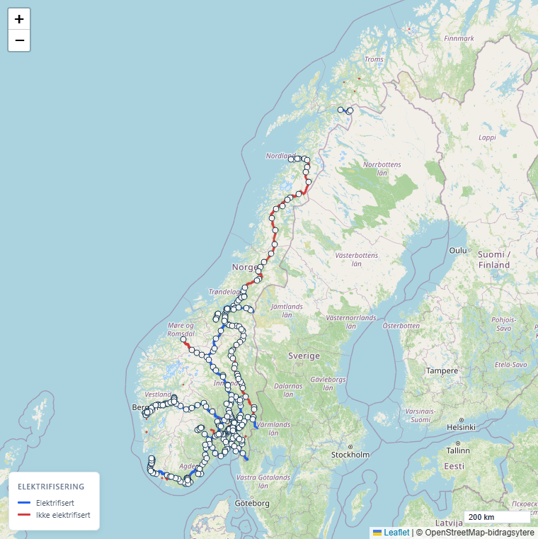

—
Total banelengde (km)
—
Elektrifisert
—
Innen 2 km fra stasjon
—
Stasjoner / holdeplasser
—
Navngitte baner

Utforsk på interaktivt kart
Søk, filtrer og se enkeltsegmenter — fargekoding etter elektrifisering, hastighet eller spor.
Klima-fotavtrykk
Elektrifiserings-kandidater
Lange baner som fortsatt går på diesel — de største enkelt-gevinstene hvis Norge skal kutte tog-CO₂.
Til sammenligning
Norge mot naboland — banelengde og elektrifiseringsrate.
Kilder: Trafikverket, BAV, DB Netz, Banedanmark (2023).
Banetyper (km)
Hastighetsfordeling
Reiseopplevelse
Hva slags reise er hver topp-bane? Tunnel-andel og forholdet mellom maks og gjennomsnitt avslører om infrastrukturen utnyttes fullt ut.
Tunnel-andel: hvor mye av lengden går under fjell. Hastighets-gap: hvor langt unna snitt-farten er fra det infrastrukturen tåler — stort gap = kurver/topografi/svake spor.
Spor-kapasitet
Signal- og sporveksel-tetthet
Antall signaler og sporveksler langs nettet — indikatorer for kontrollsystem og knutepunkt-kompleksitet.
Signaltyper
OSM-tagging av signaler er ofte ufullstendig — faktisk antall hovedsignaler er sannsynligvis høyere enn det som vises her. Sporveksler er bedre dekket.
Dobbeltspor-gap
De lengste banene rangert etter dobbeltspor-andel. Enkeltspor tvinger tog til å vente på møteplasser — direkte frekvens-tak.
100 % dobbeltspor på Gardermobanen tillater ~6 tog/t/retning. 0 % enkeltspor som Nordlandsbanen er typisk begrenset til ~1 tog/t/retning.
Topografi — tunnel og bro
Norsk jernbane er ekstremt tunneltung — fjell og fjorder krever det. Mye tunnel betyr tunge investeringer som først betaler seg når trafikken øker.
Topp 5 baner med høyest tunnel-andel
Historisk perspektiv
Norge fikk sin første jernbane i 1854 — siden har 17 tiår med utbygging skapt nettet vi har i dag. Mange av de eldste stasjonene står fortsatt og kan moderniseres.
Mest produktive jernbanearkitekter
Knutepunkter
Stasjonene som binder nettet sammen. Toppen viser hvor folk allerede bytter tog — bunnen overrasker ofte.
Potensial for økt togbruk
Hvor er de største hullene i tilbudet? Steder med mange innbyggere men langt til nærmeste stasjon — og folk som i dag bor utenfor jernbanens rekkevidde.
Største tettsteder uten togtilbud
Datakvalitet — hva vi ikke vet
Hvor pålitelige er tallene over? OSM er crowdsourced — noen tags er godt dekket, andre mangler.
Lavere prosent = større usikkerhet i tilhørende stats.
Befolkningsdekning
Topp 10 raskeste baner
Hvem driver nettet
Operatør-fordeling basert på tagget eierskap (km).
Rekorder
Norsk jernbane i tallenes ekstremer.